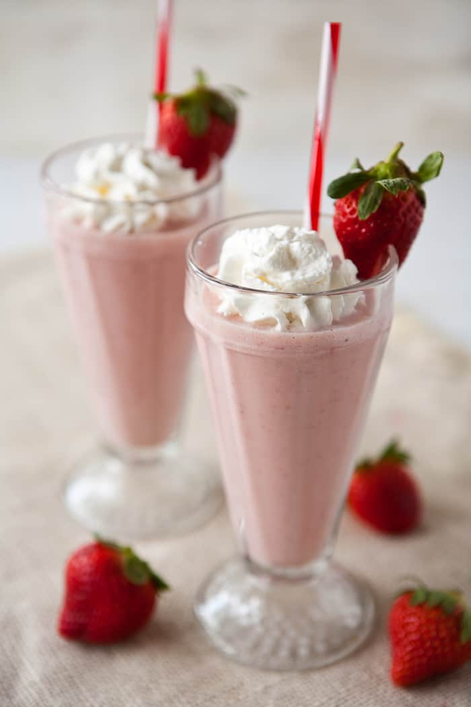

This page will give you some of the best recipes to make the most marvelous of milkshakes. Including Strawberry & Vanilla, Orea Crush and Chocolate Heaven.
First, lets introduce Strawberry & Vanilla, an all time classic.
Here is what you will need.
Method:
First of all, wash your strawberries and slice into halfs. Add the cream, milk, and ice cream to a blender, blend these together for around 20 seconds. This will soften the ice cream and produce a desirable consistency for the base of your milkshake. Next you want to add your strawberries, banana, syrup and flavouring. Blend until all ingredients are thoroughly mixed together. Serve in a long glasse, top with whipped cream, sprinkles and a few sliced strawberries. And there you have it, the classic Strawberry & Vanilla milkshake.
Here is what you will need.
Method:
Chop your chocolate into small chunks, add it to the blender with the cream, milk and icecream. Blend together until the mixture takes the colour of the chocolate. Now, crush your oreos, I'd reccomend doing this with a rolling pin. Once you have done this, add to the blender, along with the vanilla flavouring. Blend until you achieve your desired consistency. Now its for the the toppings, slice the brownie into quaters, then throw straight into the milkshake. Then cover with whipped cream. add a scoop of chocolate ice cream and place a handful of popcorn and an oreo on top! /p>
Here is what you will need.
Method:
Break up your chocolate, add it to the blender with the cookies, if your cookies are quite large, break them into halfs. Then add the milk, cream and milkshake blend together until the mixture has turned into a smooth milky texture. Cover with whipped cream, garnish with chocolate syrup and top with brownie chunks.
Images can be stored on the same host ...

... or on another server entirely.
